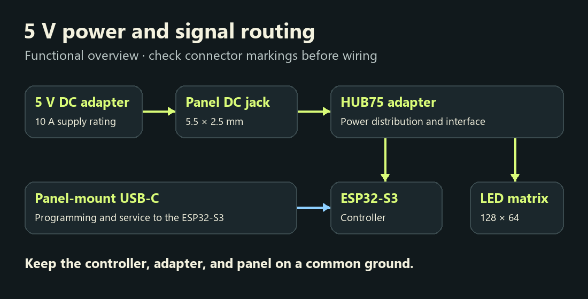
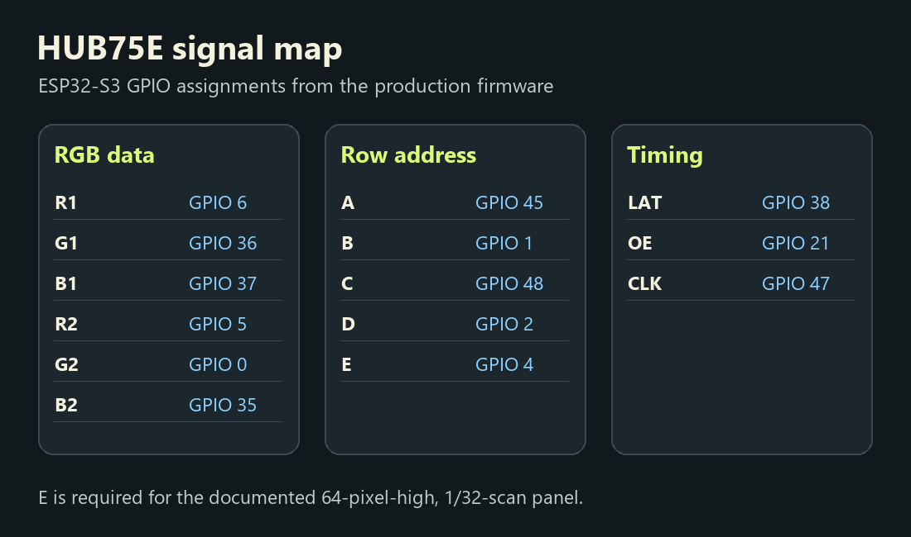
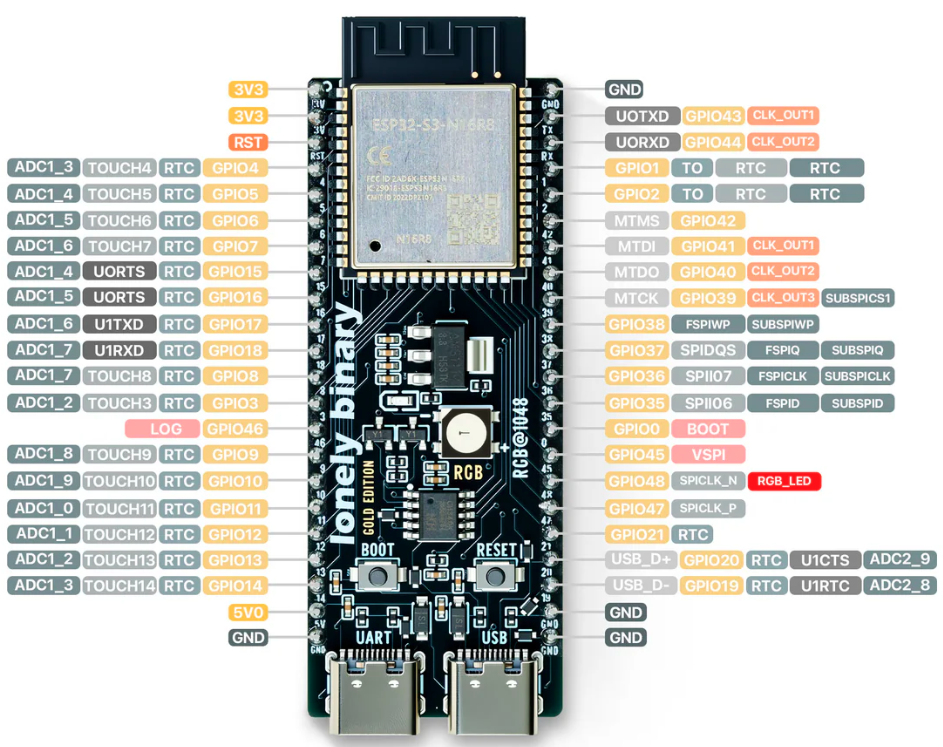

Wiring diagrams
Wire it on the bench.
Use these diagrams with the panel and controller in the parts guide. Disconnect power while changing any connections.
5 V power and service access
The 5 V adapter feeds the panel-mount DC jack and the HUB75 adapter. The controller and panel share a common ground. Use the panel-mount USB-C extension for programming and service.



HUB75E signal map
Match signal labels to the GPIO assignments in the sketch. The E address line is required for the documented 64-pixel-high, 1/32-scan panel.


| HUB75E signal | ESP32-S3 GPIO |
|---|---|
| R1 | 6 |
| G1 | 36 |
| B1 | 37 |
| R2 | 5 |
| G2 | 0 |
| B2 | 35 |
| A | 45 |
| B | 1 |
| C | 48 |
| D | 2 |
| E | 4 |
| LAT | 38 |
| OE | 21 |
| CLK | 47 |
See the reference ESP32-S3 pinout

Before power-on
- Confirm the adapter, panel, and lamp voltage ratings and verify polarity at each connector.
- Size the wire and connectors for the panel current. Use the documented external 5 V supply for the panel.
- Check ground continuity and ribbon orientation. Disconnect power before moving the HUB75 ribbon.